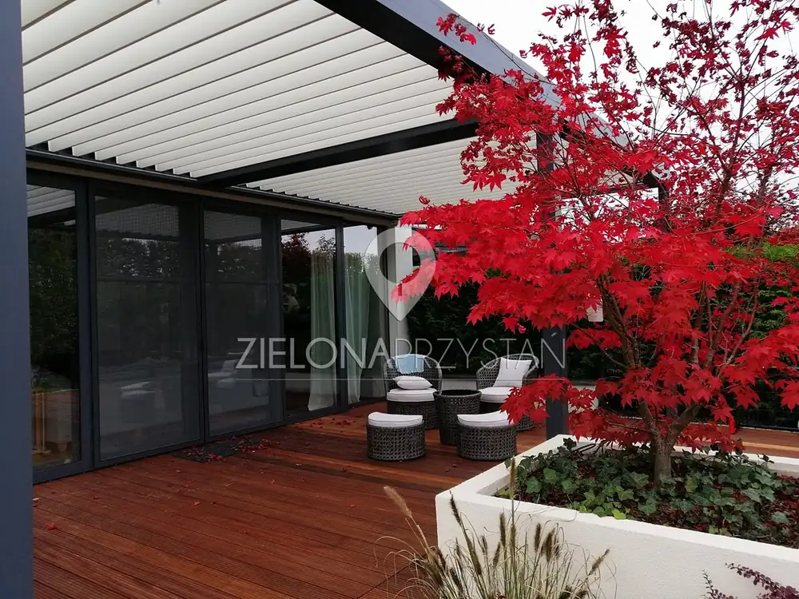

Strona główna / Realizacje
Realizacje ogrodów
25 ogrodów zaprojektowanych i założonych przez naszą pracownię: od małych ogrodów miejskich i tarasów na dachu po duże ogrody krajobrazowe ze stawem kąpielowym.
Zapytaj o projekt swojego ogrodu
Chcesz podobny ogród?
Zacznijmy od rozmowy o działce i oczekiwaniach. Projekty: 795 739 000, realizacje: 667 052 000.